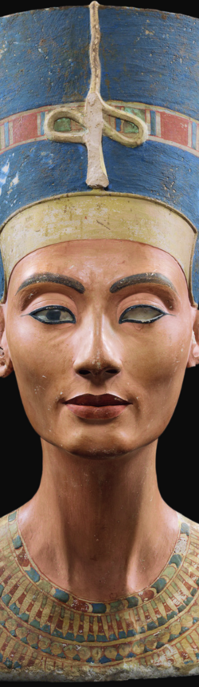
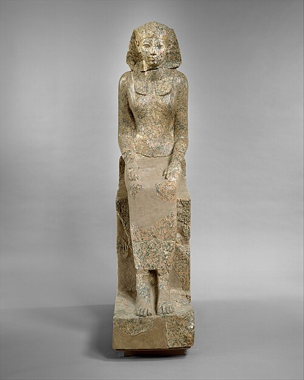
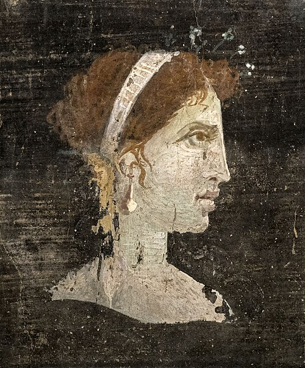

حكايات هذا القسم
كل حكاية لها صفحتها الخاصة، وتُضاف هنا بعد مراجعة المحتوى والمصادر.
حكايات نساء تركن أثرًا بارزًا في التاريخ والعلم والأدب والفن والعمل الوطني والإنساني، وألهمت إنجازاتهن أجيالًا من بعدهن.
صور تاريخية وقطع أثرية موثقة، تمهيدًا لإضافة الحكايات بعد مراجعتها واعتمادها.



كل حكاية لها صفحتها الخاصة، وتُضاف هنا بعد مراجعة المحتوى والمصادر.